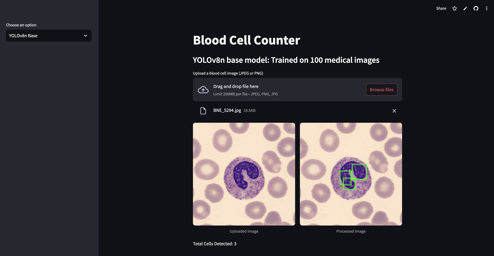

Group Project at SFU
Developed a YOLO-based object detection model to count cells in microscopic images.
Preprocessing included resizing, denoising, and converting images to grayscale to prepare a clean baseline dataset.

Extended the model by incorporating additional datasets to improve generalization and detection accuracy.
Compared to the base model above, the extended model below achieved improved accuracy, increasing the number of detected cells from 3 to 11.

SOURCE
GitHub
Deploy
Dataset for Training Baseline Model
Dataset for Training Extended Model
STACK
Python, YOLOv8n, OpenCV, Streamlit
DURATION
2025.3 - 2025.4